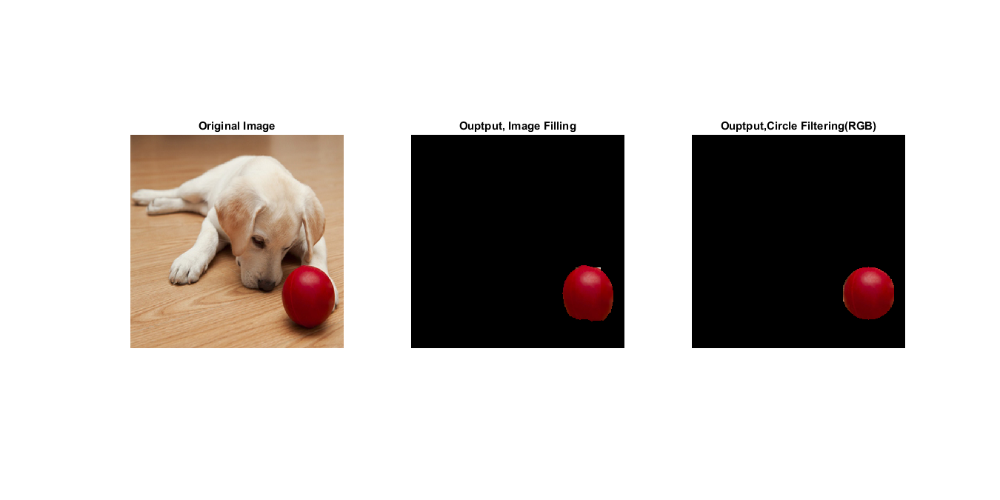

Contents
function Procolorseg()
Retrieve image and 3 planes
% Read the puppyWithBall.jpg and assign to variable puppy % Get all the 3 plains of this image seperately and store to r(RED) % g(GREEN) b(BLUE) respectively puppy = imread('PuppyWithBall.jpg'); %original image temp1 = puppy; % temp1 storing original image for safe processing r = puppy(:,:,1); g = puppy(:,:,2); b = puppy(:,:,3);
thresholding
Threashold all the 3 plains, can be done intuitively or trial and errors Better approach is to use impixel function and see the range of pixels e.g --> 1) array = impixel(puppy); 2) select the desired area,double click
for i=1:size(puppy,1) for j=1:size(puppy,2) if r(i,j)<93 || g(i,j)>54 || b(i,j)>80 r(i,j)=0; g(i,j)=0; b(i,j)=0; end end end
Smooth the image
Use median filter to remove any gaussian or salt and pepper noise ~Median filter was modified to give better smoothing result~**
r = Mymed(r);
g = Mymed(g);
b = Mymed(b);
red_ball = cat(3,r,g,b);
temp2 = red_ball; %store in temp2 for further processing
Get starting and ending Indexes and radius for drawing circle
[y x] = find(r>0); % find all the pixels' cordinates of the red ball startX = min(x); endX = max(x); centerX = startX+((endX-startX)./2); %x cordinate of the center startY = min(y); endY = max(y); centerY = startY+((endY-startY)./2); %y cordinate of the center % ball_template = red_ball(startY:endY,startX:endX,:); %for template matching, not applicable % for filling the center of the ball [fill the white spot in the ball] offsetX = ceil((centerX-startX)./2); %calculate by (radiusX of the ball)/2 offsetY = (centerY-startY)-3; %calculate by (radiusY of the ball)
Processing here
for i=1:size(puppy,1) for j=1:size(puppy,2) cc = find(i==y); ccc = find(j==x); cccc = checkBorder(i,j,centerX,centerY,offsetY); if i>(centerY-offsetY) && i<(centerY+offsetY) && j>(centerX-offsetX) && j<(centerX+offsetX) temp2(i,j,:) = temp1(i,j,:); elseif i>endY temp2(i,j,:) = 0; end if cccc == 1 temp1(i,j,:) = 0; end % if j<startX ||j>endX temp1(:,j,:) = 0; end if i<startY || i>endY temp1(i,:,:) = 0; end end end
Display all the processed images
display(puppy,temp1,temp2);
% display(puppy,red_ball,ball_template,temp1,temp2);
 end
Circle implementation
function output = checkBorder(i,j,send1,send2,x) base = abs(j-send1); height = abs(i-send2); border =(base.^2 + height.^2).^0.5; output = 2; radius = x; %radius of the circle if border > radius output=1; else output =0; end end
Display images
function display(puppy,temp1,temp2) figure('units','normalized','outerposition',[0 0 1 1]);%fullscreen figure %original subplot(131);imshow(puppy);title('Original Image'); %color processing subplot(132);imshow(temp2);title('Ouptput, Image Filling'); %circle filtered subplot(133);imshow(temp1,[]);title('Ouptput,Circle Filtering(RGB)'); %threshold --> smooth %imshow(red_ball);title('After Threasholding and Median Filter');figure; %ball template %imshow(ball_template);title('Template for template matching, Not used');figure; %circle filtered % subplot(221);imshow(temp1(:,:,1));title('Ouptput,Circle Filtering(RED)'); % subplot(222);imshow(temp1(:,:,2));title('Ouptput,Circle Filtering(BLUE)'); % subplot(223);imshow(temp1(:,:,3));title('Ouptput,Circle Filtering(GREEN)'); end